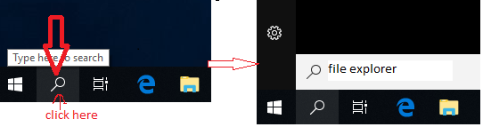
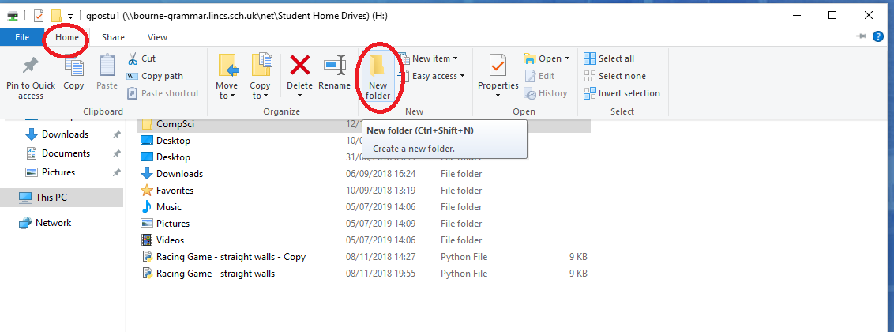
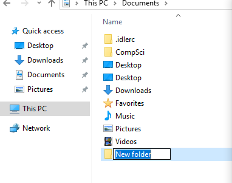

Get organised with folders
1 Your Home Drive OR the H Drive
Access your home drive
- Once you logged in using your BGS login ID and password, it is time to get to know your own space, the home drive (H drive) on your school computer.
- Your home drive is your own private disk space for you to save all your work for Computer Science and Design Engineering, maybe for other subjects if you wish.
- It is very important to organise your work in your home drive so you know how to access them quickly.
- Your home drive can be accessed by one of the following ways:
- method 1: from the File explorer on the task bar

- Method 2: press the Windows logo key + E on your keyboard
- Method 3: from the Start menu, then the magifier glass symbol, type file explorer in the search bar. 
- method 1: from the File explorer on the task bar
- Once you open the File explorer, you should see something like the image shown below.
- Double click on the drive with your username (BGS login ID) on it to open it and if this is your fist time open it, you may not see many files.

Organise your work in your home drive
- You are going to be studying at BSG for several years and on many subjects.
- Your Computer Science and Design Engneering teachers require you to work on computers, save your work on your home drive and submit your work online.
- The best way to organise your work through for the years to come is to use folders and give those folders some meaningful, purposeful names. For example, you may create a folder with the name "Computer Science" and inside this folder you can then add more folders for each year.
- Lets create some folders by following the step-by-step instructions below:
- Step 1: open File explorer, then click on the circled places shown below 
- Step 2: Rename your folder from the default "New folder" to "Computer Science" by clicking on it once then replace it with a new name, then hit enter 
- Double click on the new "Computer Science" folder to go into it. Then repeat the step 1&2 to create a folder called "Year 7" inside the "Computer Science" folder.
- Repeat the above step to create another folder called "Design Engineering"
- Try to come back to your home drive by clicking on the "This PC" on the left pane of the File explorer and see if you can navigate to the "Design Engineering" folder you have created and go inside it to also create a "Year 7" folder.
`